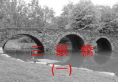

三眼橋 (一)
- 1. 耶和華是我的力量 耶和華是我的詩歌 耶和華是我的拯救
- 2. 為己 克己 捨己
- 3. 觀看 預備 喝水
- 4. 買地 買牛 娶妻
- 5. 蟲子咬 能銹壞 賊來偷
- 6. 肉體的情慾 眼目的情慾 今生的驕傲
- 7. 智慧人不要因他的智慧誇口 勇士不要因他的勇力誇口 財主不要因他的財物誇口
- 8. 為主被辱罵的人有福了 為主被逼迫的人有福了 為主被毀謗的人有福了
- 9. 願你們平安! 願你們平安! 願你們平安!
- 10. 以肚腹為神 以羞辱為榮耀 以地上的事為念
- 11. 愚昧人喜愛愚昧 褻慢人喜歡褻慢 愚頑人恨惡知識
- 12. 三十舍客勒銀子 三十兩銀 三十塊錢
- 13. 耶穌的血 亞伯的血 猶大的血
- 14. 乖僻彎曲的世代 不信悖謬的世代 邪惡淫亂的世代
- 15. 我的心歡喜 我的靈快樂 我的肉身安然居住
- 16. 文以載道 史以紀實 詩以言志
- 17. 信 望 愛
- 18. 以色列人的呼聲 馬其頓人的呼聲 財主的呼聲